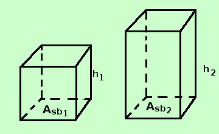

Teorema sui parallelepipedi rettangoli
Teorema:
Due parallelepipedi rettangoli aventi due dimensioni congruenti hanno i volumi proporzionali alla terza dimensione
Dimostriamolo nella forma equivalente
Due parallelepipedi rettangoli aventi le basi congruenti hanno i volumi proporzionali alle rispettive altezze
infatti se diversa e' una delle dimensioni di base basta rovesciare il solido facendo diventare altezza tale dimensione

Ipotesi
Asb1 = Asb2
|
|
Tesi
V1 : V2 = h1 : h2
|
Dimostrazione
Per la dimostrazione usiamo il criterio generale di proporzionalita': in breve due insiemi di enti sono in proporzione se si conserva l'uguaglianza e la somma
Consideriamo due insiemi di parallelepipedi rettangoli aventi la base congruente e come insiemi di enti in proporzione le altezze (prima classe) ed i volumi (seconda classe)
Dimostriamo che:
- Si conserva l'uguaglianza:se le altezze sono uguali allora sono uguali anche i volumi
- Si conserva la somma: se sommo due altezze allora vengono sommati anche i volumi corrispondenti
-
La prima parte del criterio e' rispettato, infatti:
Se due parallelepipedi rettangoli con la stessa base hanno uguali anche le altezze (uguaglianza nella prima classe) allora anche i volumi corrispondenti sono uguali (uguaglianza nella seconda classe)
infatti i due parallelepipedi avendo le stesse dimensioni avranno lo stesso volume
-
Anche il secondo criterio e' rispettato, infatti:
consideriamo nella prima classe due parallelepipedi rettangoli con la stessa base e sommiamoli: otterremo un parallelepipedo rettangolo con la stessa base e per altezza la somma delle altezze; in corrispondenza nella seconda classe otterremo un parallelepipedo rettangolo il cui volume e' la somma dei volumi dei due parallelepipedi presi prima
Essendo valido il criterio generale di proporzionalita' il teorema e' dimostrato
|